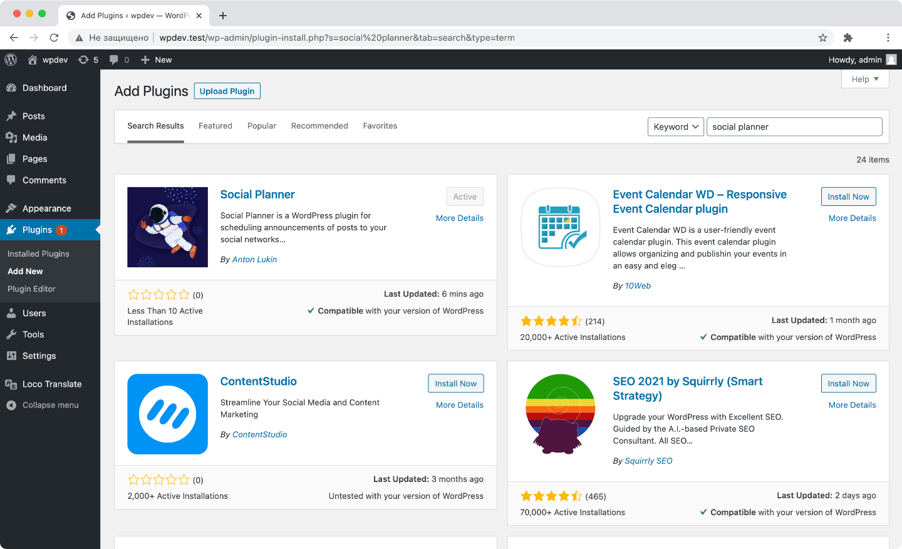

Social Planner is a WordPress plugin for automatic posting to social media accounts.
It allows you to schedule announcements of your posts on social networks.
At the moment, 4 providers are supported, but you can easily add a new one yourself.
This documentation will help you install and configure the plugin.
Advanced developers can figure out how to extend functionality and write add-ons.
If you find a bug here or in the plugin itself, feel free to open an issue on Github.
I will try to answer as soon as possible.
Just search social-planner and activate plugin from your admin dashboard.
You can also manually upload latest release to /wp-content/plugins and activate it.

The easiest way is to install the plugin from the official catalog.
Before using the plugin, you need to configure it.
Immediately after installation, go to the plugin page.
It is located in the Settings section.
Here you need to add options for the required providers.
Pay attention to the Subtitle optional field on each provider.
Fill it out if you want to use several accounts of the same social network or just for your convenience when sending.
You can send messages to any group or channel.
To do this, you need to create and add special bot to the required chat with the ability to send messages.
Write to the @BotFather in Telegram in order to receive a Token.
Follow the bot prompts, fill in all required fields and get an API Token.
Then you need to find out the group or channel ID.
If the chat has a public link, then you can use its username (in the format @channelusername).
Otherwise you can write the message to @username_to_id_bot or use this guide.
Note that chat ID can be negative.
Your settings should look something like this.
If you have an access error when sending a message, try to check the correctness of the API Token and the chat ID,
bypassing the plugin.
You can find full help on Telegram Bot API on the official website.
You can send messages both to your profile wall and to the community where you are an administrator.
Start by registering your app on the developer page.
Enter something in the title field and choose Standalone app platform.
Then confirm your action with phone call or push notification.
Please note that VK.com warns you not to transfer the Token to other sites.
So keep it secret and only use it on a trusted sites.
Social Planner does not send any user data to remote servers.
Now you need to get the profile or community ID.
You can find it in the links of your pages. Use a negative value to designate a community ID.
You can see the ID in the url on the stats page for example.